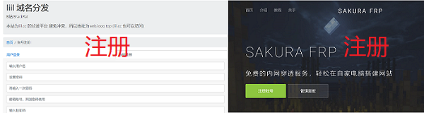
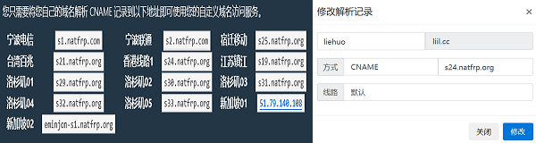
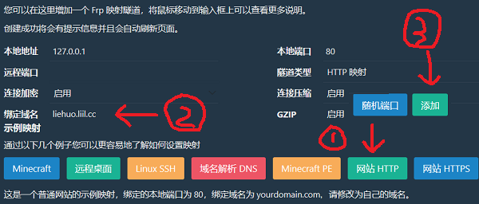
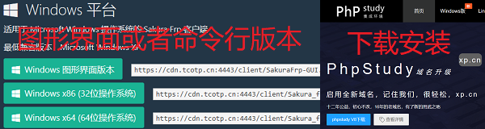
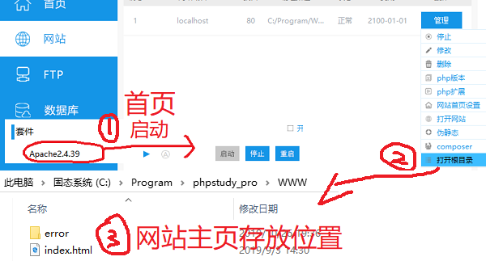
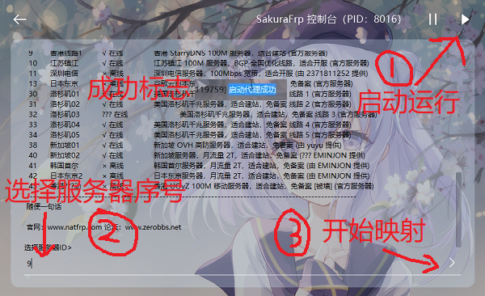

您现在的位置是：我的首页>最新文章
免费静态网站建设详细步骤
发布时间：2019-11-01 编辑：烈火神君 浏览（0） 评论览（0）
建设网站需要以下几个关键的东西：①域名 ②计算机 ③内网穿透 ④网页数据
步骤㈠：首先在 liil.cc 注册账号(感谢B站UP：BrackRat提供的免费二级域名注册)，然后在 natfrp.com 注册账号(感谢樱花映射站长ZeroDream零梦提供免费内网穿透)。

步骤㈡：在 liil.cc 里面添加解析记录，添加主机记录，例如"liehuo",方式选择CNAME，记录值就是 natfrp.com 里面的"服务器地址"，必须是境外线路(包括香港)，例如<香港线路1> s24.natfrp.org ，其他默认，然后添加即可。注意 主机记录.liil.cc 就是网站地址。

步骤㈢：在 natfrp.com 映射列表中添加一个网站HTTP隧道，绑定的域名就是你的域名，例如 liehuo.liil.cc ，其他默认，然后添加即可。

步骤㈣：在 natfrp.com 客户软件中下载一个Windows客户端，在 xp.cn 中下载并安装PhpStudy软件。

步骤㈤：打开PhpStudy软件，启动Apache2.4.39，在网站这里点管理>>打开根目录，然后把网页文件复制到根目录(右边点击排行有网页模板下载)，确保index文件在根目录。

步骤㈥：打开SakuraFrp客户端，登录SakuraFrp账号(图形界面版本在修改映射信息登录)，然后选择香港线路1(选择并输入序号)，回车确定，显示启动代理成功即可正常访问网站。

-------------------------------------------------------------------------------------------
详细过程请参考以下视频


关键字词：网站,建设,静态,免费,域名,内网,穿透,网页,模板